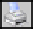

Итоговая работа по курсу "Межцеховое перемещение ТМЦ запуск исполнение и выпуск производственных работ"
*Выберете один или несколько правильных ответов
Вопрос 1: Что означают эта кнопка  ?
Вопрос 2: В каком интерфейсе происходит распределение работ (операций) по исполнителям?
Вопрос 3: Какое значение должно быть в интерфейсе «Диспетчерская доска» в столбце «Стадия ДД/Этап» для запуска в подразделении?
Вопрос 4: В каком интерфейсе ставится отметка о том, что производственная работа выполнена?
Вопрос 5: Что происходит в системе в момент выполнения операции «Запуск» в интерфейсе «Диспетчерская доска» при межцеховой передаче партии?
Вопрос 6: В каком столбце в интерфейсе «Диспетчерская доска» можно увидеть информацию о том, по какой карте запуска запущена данная ДСЕ (ПК)?
Вопрос 7: В каком интерфейсе производится запуск ДСЕ (ПК)?
Вопрос 8: Что означает наличие галки в столбце «Рзршн» в интерфейсе Операционный план?
Вопрос 9: Как проставляется отметка ОТК в интерфейсе «Операционный план» для самокотрольщика?
Вопрос 10: Что автоматически происходит при исполнении работы?